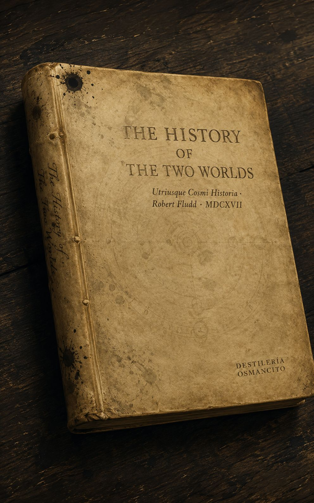
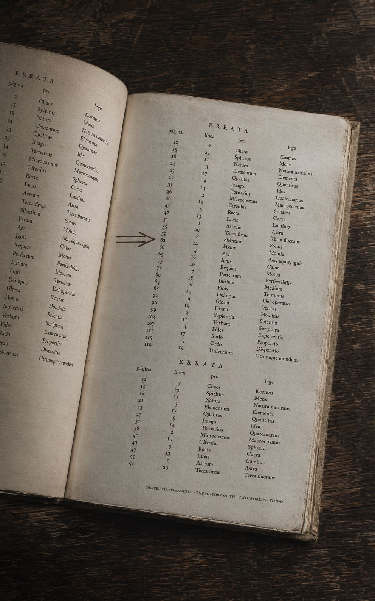
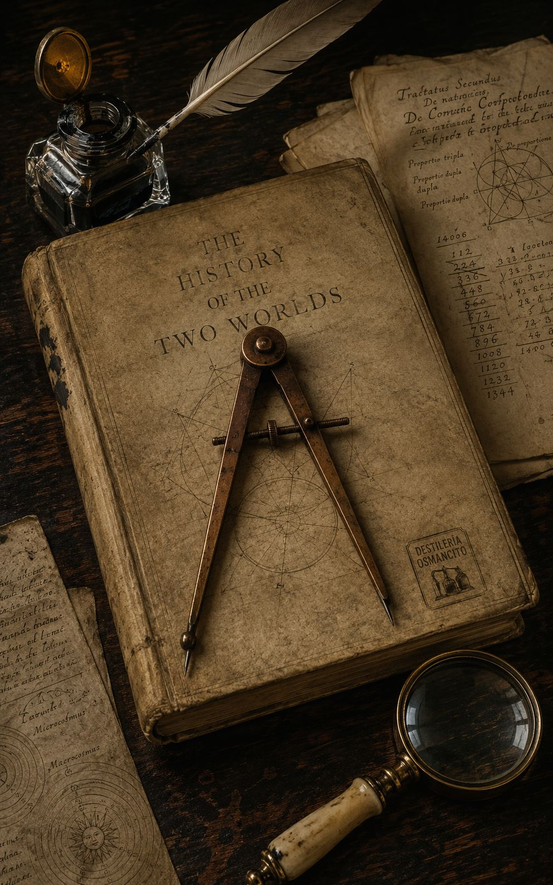
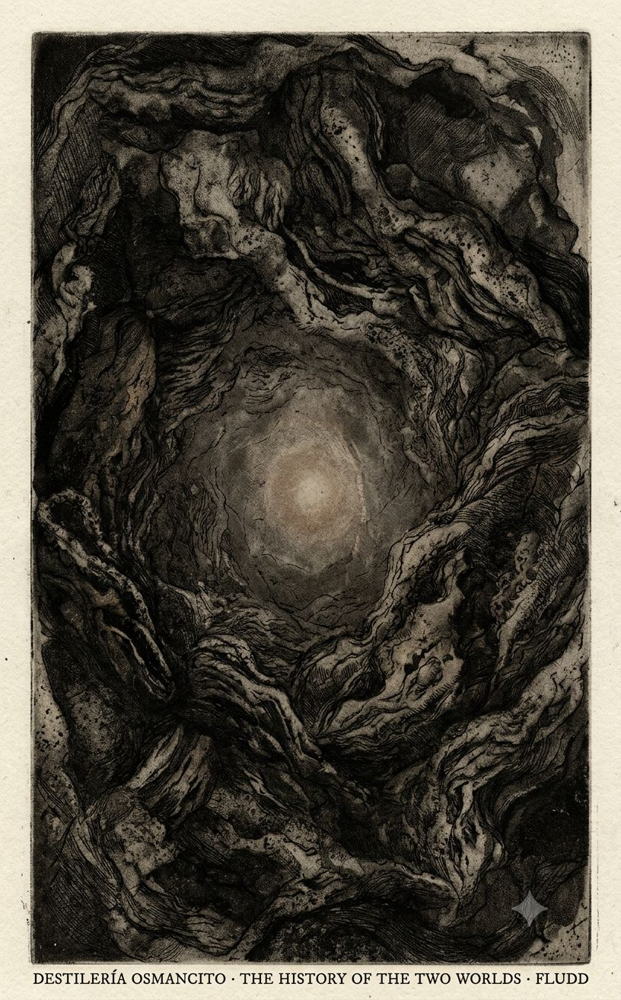
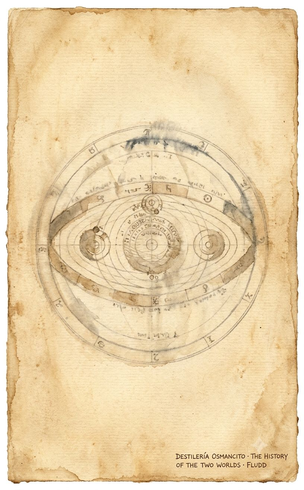
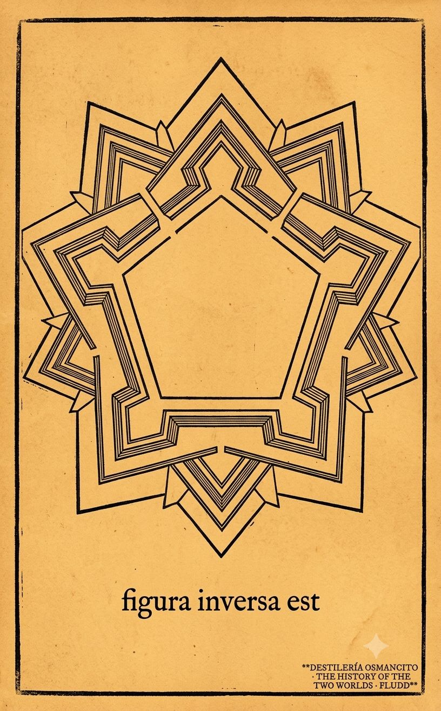
Un folio de vellum manchado y cosido, 920 páginas, grabados en cobre, impreso en Oppenheim a expensas de Johann Theodor de Bry: llega como un objeto que quiere ser el universo.
Fludd no escribe sobre el cosmos: construye uno. Cada ciencia del Tratado II —aritmética, música, geometría, pintura, arte militar, movimiento, tiempo, cosmografía, astrología, geomancia— es una demostración práctica de que el macrocosmos se refleja en el microcosmos, y que cualquier arte humana, bien comprendida, es una lectura de esa correspondencia. La tensión que lo atraviesa todo es ésta: el libro quiere ser simultáneamente filosofía hermética y manual técnico, revelación y utilidad. No resuelve esa tensión. La sostiene durante mil páginas, y eso es lo más vivo que tiene.
Lo que llega no es un libro en el sentido moderno. Es un sistema: una arquitectura del conocimiento donde teología, cosmología y aritmética de fracciones comparten la misma membrana. Nombrar lo que es la Utriusque Cosmi Historia —un tratado hermético, una enciclopedia de artes liberales, un argumento filosófico sobre la analogía entre Dios y el universo— es ya distinto de resumir lo que dice. Dice muchas cosas. Es una sola cosa: el intento de demostrar que el mundo grande y el mundo pequeño son el mismo mundo leído desde ángulos distintos.
Título — The History of the Two Worlds (Utriusque Cosmi Historia Vol. 1)
Autor — Robert Fludd (Robertus de Fluctibus), médico y filósofo hermético inglés, Oxford
Año — 1617
Género — Tratado enciclopédico de filosofía natural, cosmología hermética y artes técnicas
Extensión estimada — ~259,000 palabras / ~1,036 páginas impresas (250 palabras por página) / 2 tratados principales, divididos en múltiples libros, partes y capítulos; más de 300 grabados reportados en el catálogo bibliográfico de la guarda
Idioma original — Latín
Palabra más frecuente con contenido — GOD (DEUS en el original). Confirma: el corpus declara ser una historia del universo, y su centro gravitacional no es la naturaleza sino su Hacedor. El término aparece en mayúsculas sostenidas a lo largo de ambos tratados, señalando que no es un concepto entre otros sino el eje del que todo lo demás cuelga.
El volumen primero de la Utriusque Cosmi Historia expone, en dos grandes tratados, la historia metafísica y técnica del macrocosmos. El Tratado I parte de la creación: Dios como Hacedor infinito, la Trinidad representada geométricamente mediante el triángulo, la luz como primera sustancia que se va densificando desde el cielo empíreo hasta los elementos terrestres. El Tratado II aplica esos principios al conjunto de las artes humanas, desde la aritmética y la música hasta la geomancia y el arte militar, tratando cada disciplina como una forma de leer la estructura del universo en el dominio de lo práctico. El todo está ensamblado con grabados que no decoran sino que argumentan: el hombre desnudo inscrito en los círculos planetarios, el sol con rostro humano, los diagramas de fortines pentagonales, las figuras geománticas con sus puntos pares e impares.
Robert Fludd — autor; médico de Oxford, filósofo hermético, contemporáneo de Kepler y enemigo declarado de los peripatéticos.
Hermes Trismegistus — autoridad filosófica principal; el Pimander es el texto al que Fludd regresa una y otra vez para fundar sus argumentos sobre la naturaleza de Dios y la creación.
Johann Theodor de Bry — editor y financiador; su taller produjo los grabados que son inseparables del argumento del libro.
Carlos de Lorena, Francisco de Lorena, el Marqués de Orizon — nobles franceses a quienes Fludd enseñó las artes del Tratado II mientras viajaba por Europa; el libro recoge esas enseñanzas privadas y las hace públicas.
El padre de Fludd — tesorero de guerra bajo Isabel I de Inglaterra; destinatario de la cosmografía; presencia personal que humaniza brevemente un texto por lo demás impersonal.
Tratado I — Historia Metafísica y Física del Macrocosmos
El Tratado I abre con la cosmogonía: Dios como Monad pitagórica, Díada platónica, Trinidad cristiana. Fludd no distingue entre estas tradiciones sino que las lee como nombres distintos para la misma verdad. El universo emerge cuando Dios decide crear: la luz —primera sustancia— se expande desde el centro divino y va densificando la materia a medida que desciende desde el Cielo Empíreo (pura forma, puro fuego, sin materia) hasta el Cielo Etéreo (mezcla de luz y espíritu en proporción sesquiáltera, es decir 3:2, que Fludd identifica con la quinta musical perfecta) y desde ahí hasta la región elemental donde los cuatro elementos —fuego, aire, agua, tierra— se ordenan por densidad creciente. El Sol ocupa el centro del cosmos como símbolo físico de Dios: su cuerpo corresponde al Padre, su luz al Hijo, su calor al Espíritu Santo. Esta analogía trinitaria se repite en múltiples registros a lo largo del tratado.
La creación de los seres vivos sigue el mismo principio: las plantas se forman el tercer día, antes del Sol, porque basta el calor difuso para animarlas; los animales irracionales requieren el calor solar directo; el hombre —el microcosmos— se crea último, cuando el calor solar ya predomina sobre la tierra, y reclama además una porción de luz espiritual que lo distingue de los demás animales y lo orienta hacia arriba, hacia el cielo. El alma se liga al cuerpo mediante el equilibrio de los cuatro humores; cuando ese equilibrio se rompe gravemente, el alma se separa: eso es la muerte.
Tratado II — Arte de la Naturaleza: las artes técnicas como hijas del macrocosmos
El Tratado II comienza con una carta al lector en la que Fludd revela el origen autobiográfico del libro: durante seis años viajó por Francia, España, Italia y Alemania como tutor de nobles. Los distintos saberes del tratado fueron manuales privados escritos para cada patrono. El libro los reúne y los hace públicos.
Geomancia — El sistema de dieciséis figuras geománticas (puntos en cuatro filas, pares o impares) se presenta como una aritmética oculta que mapea sobre planetas, letras y días de la semana. El diagrama que los organiza traduce el cosmos en un sistema de clasificación binario.
Aritmética — Compendio técnico completo: numeración, adición, sustracción, multiplicación, división, fracciones, la Regla de Tres (denominada “número de oro”). Los ejemplos son prácticos —tejido de seda, precios, medidas— y los diagramas usan el método de la galera (scratch method), tachando números al procesarlos. El tono es de manual didáctico, pero la aritmética queda situada dentro del sistema cosmológico: los números son la huella del Hacedor en la materia.
Música — La proporción sesquiáltera (3:2) que produce la quinta perfecta no es solo un intervalo: es la relación constitutiva del cielo etéreo, donde materia ascendente y luz descendente se encuentran. La música es, para Fludd, la física del cosmos.
Geometría — Tratada en relación con la pintura: cómo trazar perpendiculares con compás, cómo inscribir triángulos equiláteros, cómo aplicar estas construcciones a las proporciones del rostro humano.
Pintura — Las proporciones del cuerpo humano, derivadas de la geometría, son proporciones del cosmos. El hombre que se pinta correctamente reproduce el microcosmos que refleja el macrocosmos.
Arte militar y defensa — Tratado técnico de ingeniería militar: plantas de fortines (cuadrados, pentagonales, hexagonales, irregulares), bastiones, cortinas, la herramienta de madera con ranuras para marcar ángulos sobre el terreno, sistemas de poleas. Los fortines irregulares —adaptados a la roca o al agua— se llaman trapezoides y se consideran superiores a los regulares cuando la naturaleza del lugar los favorece. El geómetra militar aplica sobre piedra y tierra las proporciones que Dios aplicó sobre el cosmos.
Cosmografía, Astrología, Arte de la Memoria, Arte del Movimiento, Arte del Tiempo — El corpus los anuncia en el índice; su desarrollo detallado pertenece en parte a volúmenes posteriores.
El libro cierra con una lista de errata que, impresa dos veces (páginas 1034–1036), pide al lector benévolo que corrija las figuras invertidas, los números errados, las instrucciones mal dispuestas. El libro que pretendía ser el cosmos admite, al final, que necesita corrección.
Lo que el corpus produce antes de ser pensado es el peso. No el peso físico del folio —aunque el vellum manchado de la portada lo evoca— sino el peso de la ambición: un hombre que viajó seis años por Europa, enseñó geometría a nobles, practicó medicina, leyó a Hermes y a Platón y a Aristóteles, y decidió que todo eso era el mismo conocimiento mirado desde ángulos distintos. La Utriusque Cosmi Historia no es modesta. Tampoco es arrogante exactamente: es un libro escrito desde la convicción de que el universo tiene una estructura, que esa estructura es cognoscible, y que las artes humanas —incluyendo la aritmética de fracciones y la construcción de fortines— son modos de leerla. Esa convicción es lo que permanece. Y también la errata al final: el cosmos tenía figuras invertidas.
Revelación versus demostración. Fludd quiere que el lector vea la verdad hermética y también quiere probarla geométricamente. El triángulo que representa la Trinidad es simultáneamente símbolo sagrado y figura euclidiana. El libro no elige entre esos dos regímenes de verdad; los yuxtapone sin resolver la tensión entre fe y geometría, entre Hermes Trismegistus y la quinta musical.
Unidad versus enciclopedia. El argumento central —macrocosmos y microcosmos son el mismo mundo— exige que todas las artes sean una sola cosa. Pero el libro es, en la práctica, una serie de manuales técnicos escritos para patronos distintos. La unidad filosófica está declarada; la unidad textual es más débil. El lector que llega buscando cosmología herética encuentra, páginas después, instrucciones para dividir fracciones.
El saber como herencia versus el saber como invención. Fludd cita a Hermes, a Platón, a Pitágoras, a Aristóteles, al Pimander, al Génesis, al Libro de Sidrac. No distingue entre revelación pagana y cristiana: todas son ventanas al mismo Hacedor. Pero también escribe desde su propia experiencia —los nobles franceses, su padre, los seis años de viaje— como si ese conocimiento vivido tuviera la misma autoridad que los textos. La tensión entre la tradición recibida y la experiencia personal nunca se nombra, pero atraviesa el libro entero.
Un libro que quiere ser el cosmos admite, en su última página, que tiene las figuras invertidas: eso es lo más honesto y lo más humano que ocurre en sus mil páginas. Entre el principio y ese final hay solo un puñado de momentos con temperatura de evento: la muerte del joven Francisco de Lorena destruido por una máquina de guerra mientras aprendía el arte militar, la oración de un hombre que se llama a sí mismo “el más indigno de todos”, el astrónomo que recomienda una ciencia y luego declara que no confía en ella. El corpus casi no narra — predica, demuestra, clasifica — pero en los márgenes de ese esfuerzo enorme hay vidas reales, brevísimas, que duelen más por lo poco que duran.
[Página 9] — Un hombre se dirige a Dios y se declara el más indigno de todos
Fludd abre el libro con una oración en primera persona dirigida a “Dios, el Mejor y el Mayor, mi Incomprensible Creador”. Le pide que regenere su alma, que “se está consumiendo en la ignorancia”, y que despierte las chispas de razón que sobrevivieron a la caída de Adán. Se firma como “Yo, Hombre. El más indigno de todos.” La humildad extrema es también una declaración de autoridad: solo quien se ha vaciado puede recibir la verdad cosmológica que llenará el libro entero. El giro es que este “más indigno” es el mismo hombre que escribirá la historia del universo.
Intensidad — 78 %
[Página 231] — Fludd recuerda a Francisco de Lorena, muerto por una máquina de guerra
En el prefacio al lector del Tratado II, Fludd reconstruye los seis años que pasó en Europa enseñando a nobles. Al llegar a Francisco de Lorena, joven caballero al que instruyó en geometría, perspectiva y arte militar, la prosa cambia de tono: lo llama “el más noble y prometedor de los jóvenes”, dice que aprendía con una velocidad y un deleite extraordinarios, que llegó incluso a rivalizar con su propio maestro. Luego, en una sola frase subordinada, informa que Francisco fue “violentamente arrebatado de la sociedad humana por una muerte prematura, destruido infelizmente por una máquina de guerra de fatídica consecuencia”. El hombre al que se enseñó el arte de los fortines murió por ese mismo arte. Fludd no lo comenta, pasa al siguiente patrón.
Intensidad — 92 %
[Página 231] — Fludd dedica la Cosmografía a su padre
Entre la lista de nobles y sus ciencias asignadas, Fludd detiene el catálogo un momento para hablar de su padre: le dedicó la Cosmografía porque fue de él de quien “sacó el origen de su vida” y obtuvo “el apoyo necesario para probar el dulce néctar de las Musas”. El padre era Tesorero de Guerra bajo Isabel I de Inglaterra y Países Bajos. La dedicatoria no es solo afectiva: coloca al padre —un hombre de cuentas militares— como el destinatario natural de la descripción del mundo. Hay algo involuntariamente irónico en que la más contemplativa de las ciencias del tratado vaya dirigida al funcionario que pagaba los ejércitos.
Intensidad — 74 %
[Página 232] — Fludd describe la geomancia al Vice-Legado de Aviñón y luego declara que no confía en ella
Fludd cuenta que escribió el arte de la geomancia para el Vice-Legado de Aviñón, “nacido de sangre papal” y muy versado en las ciencias matemáticas. Páginas después, al concluir el capítulo sobre usos adivinatorios más extremos de esa misma ciencia —predicciones sobre amistades, enfermedades, prisión, honor, plaga—, Fludd los suprime deliberadamente “porque no querría que se depositara demasiada fe en esta ciencia, a causa de la incertidumbre de sus principios”. Ha dedicado un tratado entero a un arte en cuyos fundamentos dice no creer del todo. El libro lleva esa contradicción sin resolverla.
Intensidad — 76 %
[Página 382] — Un hombre espera que caigan manzanas; un lobo mira a los ahorcados
En el tratado de Aritmética Mnemónica, Fludd diseña los “lugares de memoria” que permiten realizar cálculos mentales. Las imágenes que propone para poblar esos lugares son: en el primero, “un hombre o una chica esperando que caigan manzanas, nueces u otro fruto de un árbol”; en el segundo, “personas tocando campanas en lo alto de una torre muy alta”; en el tercero, “un lobo o un zorro mirando con avidez a los hombres colgados de una horca”. Son imágenes que deben ser memorables, es decir perturbadoras. El método de cálculo más eficaz que Fludd conoce requiere que el estudiante habite mentalmente una escena de ejecución.
Intensidad — 81 %
[Página 1034–1036] — El cosmos tiene las figuras invertidas
El libro cierra con la errata, listada dos veces en las últimas páginas. “Que el amable lector corrija estos errores para que no causen confusión.” Siguen correcciones concretas: la figura del cubo largo está invertida; la novena figura está igualmente invertida; en la página 99, los signos numéricos deben disponerse de otra manera. El libro que se propuso ser la historia del universo —sus proporciones, sus armonías, sus correspondencias perfectas entre Dios y la materia— termina con un listado de lo que salió al revés. La errata se imprimió dos veces, presumiblemente porque la primera copia también llegó demasiado tarde.
Intensidad — 88 %
Un libro donde casi no pasa nada excepto en los márgenes: un joven muerto por la misma ciencia que aprendía, un lobo mirando los ahorcados como método de cálculo, un cosmos que cierra con sus figuras invertidas. La narrativa de Fludd es el territorio que rodea el argumento, no el argumento mismo — y es ahí, en los bordes, donde aparece la vida.
El libro que pretende revelar la estructura del cosmos lo hace diseccionando primero una masa negra y fétida en casa de un amigo, extrayendo de ella el sol como si fuera un preso que sale del purgatorio. Fludd no habla del universo desde arriba: habla desde abajo, desde el olor del caos, desde los dedos manchados de alquimia. Las joyas de este corpus no están en la cosmología —están en los bordes: el joven que aprendió el arte militar y murió aplastado por él, el lobo que mira a los ahorcados como técnica pedagógica, la errata final impresa dos veces porque la primera copia llegó tarde. Un libro que quiere ser perfecto y no puede serlo.
El libro abre con un hombre hablando con Dios antes de atreverse a hablar con el rey. La tensión se abre en la primera línea: alguien se llama a sí mismo “el más indigno de todos” y a continuación emprende la tarea de escribir la historia del universo. El movimiento viaja entre la súplica y la ambición sin que Fludd parezca ver la contradicción: pide que le iluminen las “chispas de razón que sobrevivieron a la caída de Adán” y luego firma la carta, listo para proceder. El cierre es la firma misma: “Yo, Hombre. El más indigno de todos.” La energía es devoción con doble filo.
Veredicto — Estuche que pone en marcha el libro entero: declara el régimen de autoridad desde el que se escribe todo lo que sigue.
Un hombre abre un libro de mil páginas sobre la estructura del universo dirigiéndose primero a Dios para pedirle que despierte en él “las chispas de razón que sobrevivieron a la caída de Adán” y que han estado “miserablemente sumergidas durante mucho tiempo en el abismo de la oscuridad corporal.” Le pide que haga su voluntad en la parte celestial de él, el hombre, igual que en la parte terrenal —“de modo que todo lo producido en ambas partes pueda participar, mediante la debida consideración, de tu bondad.” Luego se firma: “Tu criatura. El más indigno de todos. Yo, Hombre.” La firma es el giro: el hombre que acaba de declararse el más indigno de todos es el mismo que escribirá la historia del universo. La humildad es el protocolo de acceso.
La tensión se abre con una paradoja metodológica: es imposible conocer a Dios directamente, ni siquiera le fue concedido a Moisés. Por tanto, para conocerle, hay que estudiar sus efectos —el universo— y remontar desde ahí hasta la causa. El movimiento escala: Fludd convierte esa limitación en programa, y el programa en el libro entero. El cierre es elegante: la incognoscibilidad de Dios no cancela el proyecto sino que lo funda. La energía es vértigo metódico.
Veredicto — Estuche que instala la arquitectura epistemológica del corpus: todo lo que sigue es, formalmente, una manera de hablar de algo que no puede decirse directamente.
Es imposible para incluso el más sabio o ingenioso demostrar o conocer a Dios directamente, porque nunca le ha sido concedido a nadie el definirle en su esencia —ni siquiera al divino caudillo Moisés, ni lo será en ninguna era. Tan omnipotente e incomprensible es en su propio ser. Por tanto, es necesario que sea buscado desde lo que sigue: que nuestro conocimiento se le aproxime a través de sus efectos más excelentes. El Salmista nos enseña a contemplar esos efectos más nobles en los cielos, y su gloria en el firmamento, como si fuera en un espejo altamente pulido. Este viaje es inmenso, extremadamente espinoso y peligroso; y verdaderamente, por qué escaleras podríamos alcanzar la cima de esa invisible altura no es fácil de descubrir sin la ayuda de la luz divina.
La tensión se abre acumulando. Fludd no elige un nombre para Dios: los lista todos —el eterno de Hermes, el más antiguo de Tales, el principio no engendrado de Platón, el ser de los seres, el primer motor, el padre. El movimiento es centrípeto: todos los nombres convergen en el mismo punto, la mónada pitagórica, que es la imagen matemática de la unidad perfecta. El cierre llega cuando Fludd equipara esa mónada con la unidad que contiene todos los números: Dios es a la creación lo que el uno es al resto de los enteros. La energía es catalogación sagrada.
Veredicto — Estuche que muestra la estrategia del libro: Fludd no elige entre tradiciones sino que las apila, convirtiendo la acumulación misma en argumento.
Los Pitagóricos y quienes más hábilmente conocían la ciencia numérica asignaron la mónada o unidad a Dios el hacedor, tanto porque antes de todas las cosas estuvo solo y único, como porque se mantuvo como el primer actor y único motor para completar la vasta estructura de la obra. A su materia o sujeto, el segundo Ser sobre el cual el hacedor actuó para la perfección del mundo, le atribuyeron la Díada o dualidad. No de otra manera que como se dice que todos los números están en la unidad, que es la medida común, la fuente y el origen de todos los números, y contiene dentro de sí mismo todo número singularmente unido. Dios tiene todos los nombres, puesto que todas las cosas están en él y él mismo está en todas las cosas.
La tensión se abre con un giro inesperado: Fludd va a demostrar la cosmogonía del universo diseccionando con fuego una “cierta materia bien conocida por todos” que observó en casa de un amigo. El movimiento desciende hacia lo concreto antes de volver a subir: la prosa pasa de la filosofía platónica a los olores, las texturas, el color negro de la tierra que cubre los demás elementos. El clímax llega cuando del centro más interno de esa masa deforme emerge la sustancia solar —“miserablemente y como desde el purgatorio, o como resucitando de entre los muertos.” Y en el fondo, cuando se han extraído las joyas, queda el residuo negro cuya rojez estaba oculta, al que Fludd compara con Lucifer caído del cielo. La energía es alquimia como cosmología en primera persona.
Veredicto — El estuche más denso del Tratado I: es el único momento donde la argumentación cosmológica produce observación directa, olor, y una imagen que no se olvida.
Desde el centro más inward de la masa informe, como desde el mismo punto del abismo, se ve surgir la sustancia solar de esa masa —miserablemente, como desde el purgatorio, o como resucitando de entre los muertos— todavía luchando con la impureza de la masa y como enferma. Se la ve refinarse por una maravillosa operación de inteligencia e industria filosófica. Algunos Filósofos llamaron a esa parte oscura de la masa el “Sol Central.” Por su operación somos enseñados de qué manera, al principio del mundo, nuestro Sol celestial —después de que se hizo primero una purificación en ese lugar inferior— fue exaltado a su lugar incorruptible, es decir, al corazón del cielo etéreo.
Cuando esas gemas preciosas habían sido extraídas de la masa más negra y tomadas como por violencia, quedó en el fondo una cierta materia como de heces, muy negra, cuya negrura era manifiesta, pero cuya rojez estaba oculta, teniendo como una naturaleza metálica. Esta, como Lucifer que ha caído del cielo, fue arrojada al abismo más bajo, porque incluso había luchado por presidir y predominar sobre el material celestial. El olor era el del caos.
La tensión se abre como un inventario: Fludd lista a los nobles a los que enseñó cada ciencia durante sus seis años por Europa. El movimiento viaja sin altibajos hasta que llega a Francisco de Lorena. Entonces el ritmo cambia: el elogio es intenso —“el más noble de los jóvenes, de la mayor promesa”, aprendía con “velocidad maravillosa”, llegó a rivalizar con su propio maestro. Y en una sola frase subordinada: fue “violentamente arrebatado de la sociedad humana por una muerte prematura, destruido infelizmente por una máquina de guerra de fatídica consecuencia.” El cierre es el silencio: Fludd pasa al siguiente patrón sin comentar. La energía es luto funcional —el duelo administrativo de un preceptor que sigue.
Veredicto — El estuche más vivo del Tratado II: produce la única muerte real del corpus, y la entierra en una subordinada.
Compilé la Geometría, la Perspectiva y los secretos del arte militar para un joven nobilísimo de la mayor promesa y un príncipe de alto espíritu, Francisco de Lorena, Caballero de Guisa. Fue violentamente arrebatado de la sociedad humana por una muerte prematura —ay— destruido infelizmente por una máquina de guerra de fatídica consecuencia. Conmigo como su maestro, no solo comprendió estas ciencias con una velocidad maravillosa, sino que las practicó con tal deleite de ánimo que incluso se esforzó en superarme a mí, su propio preceptor, en ellas. El hombre al que Fludd enseñó el arte de los fortines murió aplastado por ese mismo arte. Fludd no lo comenta.
La tensión se abre en lo técnico: Fludd describe un sistema de “lugares de memoria” para realizar cálculos sin papel, colocando imágenes vívidas en posiciones mentales fijas. El movimiento es pedagógico hasta que llega a los ejemplos concretos: para que las imágenes sean memorables deben ser perturbadoras. En el primer lugar, una chica esperando que caigan manzanas. En el segundo, campaneros en una torre. En el tercero: “un lobo o un zorro mirando con avidez a los hombres colgados de una horca.” El cierre es pragmático: Fludd pasa al siguiente ejercicio sin justificar la elección. La energía es pedagogía que no parpadea.
Veredicto — Estuche que revela la lógica interna del sistema: la eficacia mnemónica requiere imágenes que no puedan olvidarse, y Fludd elige las que no se olvidan.
Los lugares de memoria retendrán fácilmente una serie de dos números mediante una imagen mental si se realiza una acción doble en cada lugar, de abajo hacia arriba. En el primero, imagínese que un hombre o una chica está apostado esperando que caigan manzanas, nueces u otro fruto de un árbol. En el segundo, fórmese una imagen mental de gente tocando campanas colgadas en lo alto de una torre muy alta. En el tercero: un lobo o un zorro mirando con avidez a los hombres colgados de una horca. Para multiplicar sin papel, es necesario habitar mentalmente una escena de ejecución.
La tensión se abre con una declaración de omisión: Fludd dice haber suprimido los usos más extremos de la geomancia —predicciones sobre prisión, honor, plaga, enmistades— “porque no querría que se depositara demasiada fe en esta ciencia, a causa de la incertidumbre de sus principios.” El movimiento revela la paradoja: Fludd dedicó cientos de páginas a un sistema que ahora declara de principios inciertos. El cierre es la supresión misma: lo que no está es tan significativo como lo que está. La energía es escepticismo tardío.
Veredicto — Estuche que expone la fractura interna del corpus: el autor no resuelve la contradicción entre enseñar y desconfiar; simplemente la registra y sigue.
Todos estos usos de la geomancia —las predicciones sobre amistades o enemistades, sobre los litigios, la buena fortuna o las desgracias, el cautiverio y la prisión, los títulos y el honor, la plaga y la matanza— los he omitido en este lugar porque no querría que se depositara demasiada fe en esta ciencia, a causa de la incertidumbre de sus principios. El libro que contiene esa omisión tiene trescientas páginas sobre la misma ciencia.
La tensión se abre con una petición al lector: “Que corrija estos errores para que no causen confusión.” El movimiento es una lista: la figura del cubo largo está invertida; la novena figura, igualmente; en la página 99, los signos numéricos deben disponerse de otra manera. El cierre es que la errata está impresa dos veces —presumiblemente porque la primera copia llegó demasiado tarde al proceso de impresión. La energía es perfección fracasada con dignidad.
Veredicto — El estuche que cierra el libro y lo contradice: el sistema que prometió revelar las proporciones del universo termina pidiendo al lector que corrija lo que está al revés.
El libro cierra con una lista de lo que salió mal en la impresión del libro que describió cómo está hecho el universo. La figura del cubo largo está invertida. La novena figura, igualmente invertida. En la página 99, los signos numéricos deben disponerse de otra manera. Que el amable lector corrija estos errores para que no causen confusión. La errata aparece dos veces porque la primera copia llegó tarde. El cosmos tenía las figuras al revés.
En este corpus casi no hay personajes, pero el reconocimiento lo atraviesa de principio a fin: es un libro escrito por alguien que necesita ser reconocido por Dios antes de atreverse a hablar de Él, y que necesita ser reconocido por el Rey antes de publicarlo. El umbral es doble y asimétrico: Fludd se declara el más indigno de todos precisamente para que nadie pueda negarle el derecho a escribir. La única muerte real del libro —Francisco de Lorena, aplastado por una máquina de guerra— recibe un reconocimiento póstumo de dos líneas y no vuelve a mencionarse. El cosmos merece mil páginas; el joven muerto merece una subordinada.
[Página 9] — Dios reconoce al hombre como su criatura
Tipo — Metafísico / espiritual.
Forma — No declarativo: es el reconocimiento que Fludd solicita en forma de oración, no el que ha recibido. La petición misma lo define: Fludd pide que Dios “regenere su alma que se consume en la ignorancia” y despierte las “chispas de razón que sobrevivieron a la caída de Adán.” El reconocimiento divino es aquí la condición de posibilidad del libro —no un hecho consumado sino una apuesta que el libro entero hace.
Condición — La humillación previa. Fludd se declara “el más indigno de todos” como gesto protocolario de acceso: la indignidad declarada es la llave que abre la posibilidad del reconocimiento divino.
Costo — La identidad como autor. Fludd firma la oración como “Yo, Hombre” —no como Robert Fludd, médico de Oxford, sino como el representante de la especie entera. El nombre propio se borra para que el reconocimiento pueda ocurrir.
Suficiencia — El corpus no lo dice. El libro comienza de todas formas, con o sin confirmación de que la petición fue escuchada.
[Página 10] — El Rey reconoce el saber de Fludd
Tipo — Institucional / político.
Forma — La dedicatoria a Jacobo I de Inglaterra: Fludd le llama “Ministro e Inmediato Gobernador del Emperador de los Cielos y la Tierra.” El reconocimiento del rey es el paraguas bajo el cual el libro puede publicarse. Fludd no le dedica el libro como regalo sino como protección: al poner el nombre del rey en la portada, nadie puede perseguir al autor sin atacar implícitamente al monarca.
Condición — La posición del rey como intermediario entre Dios y los hombres: Fludd le reconoce a Jacobo una función cosmológica —es el gobernador terrenal del cosmos— para que Jacobo pueda reconocerle a él la función de cosmólogo.
Costo — La subordinación pública. La dedicatoria es un acto de deferencia que encuadra todo lo que sigue: el hombre que escribirá la historia del universo lo hace bajo la protección de un rey al que llama su amo.
Suficiencia — Funcional: el libro se publicó. Si la protección real fue efectiva no lo sabemos por este corpus.
[Páginas 13–20] — Fludd reconoce a Hermes Trismegistus, Platón y los filósofos paganos como autoridades válidas junto a Moisés y Cristo
Tipo — Intelectual / filosófico.
Forma — Cita explícita y deliberada: Fludd pone a Hermes Trismegistus en el mismo nivel que Moisés como revelador de verdades divinas. Esto no es casual —es una declaración de linaje intelectual que el corpus sostiene durante cientos de páginas.
Condición — La compatibilidad que Fludd construye activamente: no reconoce a los filósofos paganos a pesar de ser paganos sino porque, en su lectura, están diciendo lo mismo que el Génesis desde otro ángulo.
Costo — La vulnerabilidad teológica. Reconocer a Hermes como autoridad equivalente a Moisés era una posición que podía costarle la reputación o algo más. El corpus no menciona ese riesgo, lo que es en sí mismo una postura.
Suficiencia — El corpus lo trata como suficiente y definitivo. Fludd no vuelve a justificar la elección.
[Páginas 17–20] — Fludd rechaza el reconocimiento de los Peripatéticos
Tipo — Intelectual / polémico.
Forma — Negación explícita: los seguidores de Aristóteles son “los únicos” que niegan que el mundo fue creado. Fludd los excluye del linaje válido de filósofos sin darles espacio para responder dentro del texto.
Condición — La incompatibilidad con la creación: quien niega que el mundo tuvo un principio no puede ser reconocido como autoridad en un libro que trata de cómo fue creado el mundo.
Costo — Ninguno declarado. Fludd asume el costo tácitamente: escribir un libro que refuta a Aristóteles en 1617 no era una posición cómoda.
Suficiencia — El rechazo es definitivo dentro del corpus. Los Peripatéticos no reaparecen como interlocutores.
[Página 231] — Fludd reconoce a Francisco de Lorena como alumno excepcional
Tipo — Afectivo / pedagógico.
Forma — Elogio póstumo en una sola frase compleja: “el más noble y prometedor de los jóvenes”, que aprendía con “velocidad maravillosa” y llegó a rivalizar con su maestro. El reconocimiento es máximo en intensidad y mínimo en espacio: dos líneas antes de la subordinada de su muerte.
Condición — La muerte previa. Francisco solo recibe ese reconocimiento porque ya no puede disputarlo ni superarlo. El elogio llega cuando ya no puede ser usado.
Costo — Para el reconocido: la vida. Para Fludd: ninguno declarado.
Suficiencia — El corpus no puede saberlo. Francisco no puede recibirlo.
[Página 231] — Fludd reconoce a su padre como origen de su saber
Tipo — Afectivo / filial.
Forma — Dedicatoria de la Cosmografía: “de quien saqué el origen de mi vida y obtuve el apoyo necesario para probar el dulce néctar de las Musas.”
Condición — La deuda biológica y económica: el padre financió la educación que hizo posible el libro. El reconocimiento es una devolución.
Costo — Ninguno declarado. Es el único reconocimiento del corpus que no tiene precio visible.
Suficiencia — El corpus no lo pregunta. La dedicatoria es el gesto y el cierre.
[Páginas 1034–1036] — El corpus reconoce sus propios errores
Tipo — Técnico / editorial.
Forma — La errata: lista de figuras invertidas, números dispuestos incorrectamente, instrucciones mal colocadas. El corpus se reconoce a sí mismo como imperfecto y delega la corrección al lector.
Condición — El error de imprenta: no es una humildad voluntaria sino una constatación forzada.
Costo — La autoridad cosmológica. Un libro que describió las proporciones perfectas del universo admite, en su última página, que sus propias proporciones estaban al revés.
Suficiencia — Insuficiente por definición: la errata impresa dos veces sugiere que la primera copia llegó tarde para corregir la primera edición.
Metafísico / espiritual — 1 (Dios al hombre, solicitado) Institucional / político — 1 (el Rey a Fludd, funcional) Intelectual / filosófico — 2 (Fludd a los filósofos; rechazo a los Peripatéticos) Afectivo / pedagógico — 1 (Fludd a Francisco de Lorena, póstumo) Afectivo / filial — 1 (Fludd a su padre) Técnico / editorial — 1 (el corpus a sus propios errores)
Lo inesperado: el corpus que declara ser una historia del universo tiene más reconocimientos de tipo institucional y técnico que espirituales. El reconocimiento divino —el único que importa según la lógica del libro— es el único que no está confirmado. Todo lo demás funciona; eso, no se sabe.
Umbral declarado — Para ser reconocido por Dios: humildad radical, vaciamiento del nombre propio, reconocimiento previo de la propia indignidad. Para ser reconocido por el corpus como autoridad filosófica: aceptar que el mundo fue creado y que Dios es su causa. Para ser reconocido como saber válido: ser enseñable, tener proporciones, poder demostrarse a partir de sus efectos.
Umbral real — En la práctica, el reconocimiento en este corpus lo otorgan dos fuerzas: la muerte y la utilidad. Francisco de Lorena recibe el elogio más alto del Tratado II porque está muerto y no puede reclamarlo. Los filósofos paganos son reconocidos porque son útiles para el argumento. Los Peripatéticos son excluidos porque no lo son. El padre de Fludd es reconocido porque financió lo que el libro celebra. El umbral real no es la humildad ni la verdad: es la conveniencia estructural.
El precio no negociable — La utilidad para el sistema. Nada en este corpus es reconocido sin que primero sirva a la arquitectura del argumento. Ni Dios, ni el rey, ni los muertos, ni los errores tipográficos.
Quién otorga — En orden descendente: Dios (fuente de todo reconocimiento, pero ausente como interlocutor activo), el Rey (protección institucional), el corpus mismo (que reconoce y excluye autoridades filosóficas). Fludd es simultáneamente el que otorga reconocimiento a otros y el que lo solicita para sí.
Quién espera — Fludd espera el reconocimiento de Dios. Francisco de Lorena esperó el de la historia. El lector espera ser reconocido como capaz de corregir la errata.
La brecha — La más significativa es entre Francisco de Lorena y lo que recibe: el alumno que “llegó a rivalizar con su maestro” merece, según los criterios que el propio corpus construye, una mención proporcional a su capacidad. Recibe dos líneas y una subordinada de muerte. La brecha entre mérito y reconocimiento es total —y el corpus no la nota.
La inversión — No ocurre. Fludd nunca está en posición de necesitar ser reconocido por sus alumnos, ni los alumnos pueden reconocerle a él desde una posición de igualdad. La jerarquía entre Dios, el autor y los sujetos del corpus no se invierte en ningún momento.
El compás como reconocimiento — Cuando Fludd describe haber enseñado geometría a sus nobles, la imagen implícita es la de alguien que pone un instrumento en manos de otro y le dice: eres capaz de usar esto. Eso es reconocimiento. El corpus lo llama instrucción.
La disección alquímica como reconocimiento — Fludd describe haber observado la materia primordial en casa de “un amigo.” Ese amigo —sin nombre, sin más detalle— le dio acceso a algo que Fludd convirtió en el argumento central del Tratado I. El corpus no reconoce a ese amigo. El reconocimiento fluye en una sola dirección: del experimento al argumento, del argumento al libro, del libro a Fludd.
Los grabados como reconocimiento a Johann Theodor de Bry — El editor y grabador cuyo trabajo es inseparable del argumento del libro no aparece como interlocutor intelectual. El corpus trata los grabados como ilustraciones, no como argumentos independientes. El reconocimiento que merecería De Bry como coautor visual no existe en el texto.
El único caso claro es Francisco de Lorena. Recibe su reconocimiento póstumo en el prefacio del Tratado II —años después de su muerte, cuando Fludd escribe desde Inglaterra el libro que surgió de aquellas enseñanzas en Francia.
Cuánto tiempo tardó — Indeterminado. Fludd viajó durante seis años; el libro se publicó en 1617. El reconocimiento llega con el libro, no con la muerte.
Qué cambió mientras tanto — Francisco murió. El reconocimiento que recibe es el de un ausente: puede ser elogiado sin límite porque no puede objetar, no puede superarlo, no puede hacer nada con él.
Si el reconocimiento que llegó es el mismo que se esperaba — Imposible saberlo. El corpus no da voz a Francisco en ningún momento. Era alumno, no interlocutor.
La pregunta que el corpus no puede responder — Si el reconocimiento póstumo de dos líneas vale algo para alguien aplastado por una máquina de guerra. El corpus no formula la pregunta. La evita con la misma eficacia con la que pasa al siguiente noble en el listado.
El reconocimiento de Dios que no llega confirmado — Fludd pide en la oración inicial que Dios ilumine su alma y despierte sus chispas de razón. El corpus comienza de inmediato, sin esperar confirmación. No sabemos si el reconocimiento divino llegó —el libro procede como si hubiera llegado, o como si no fuera necesario esperarlo.
Qué falló — Las condiciones del fallo no son del sistema ni del reconocido: son de la naturaleza del reconocedor. Dios, en este corpus, no habla de vuelta. El reconocimiento divino es estructuralmente diferido por definición.
El reconocimiento de la geomancia que el propio autor sabotea — Fludd escribe cientos de páginas sobre la geomancia y luego declara que no confía en sus principios y suprime sus aplicaciones más extremas. Ha otorgado a una ciencia el reconocimiento de un tratado completo y luego le retira la confianza. El reconocimiento existe en el papel; la autoridad no.
Qué falló — El reconocedor. Fludd no puede sostener hasta el final lo que comenzó.
Sí existe, y es el hallazgo más preciso del instrumento en este corpus: el reconocimiento destruye la singularidad de la espera.
Mientras Francisco de Lorena está vivo, su capacidad de “rivalizar con el maestro” es una promesa abierta —algo que podría ocurrir, una tensión activa. Cuando Fludd lo reconoce en el prefacio, esa promesa se cierra: queda fijada en el pasado como potencial no realizado. El elogio congela lo que la muerte ya había detenido.
De forma análoga: el corpus que solicita el reconocimiento divino en su primera página y luego procede sin esperarlo destruye la condición que declaró necesaria. Si el libro puede escribirse sin saber si Dios lo reconoce, entonces la petición inicial era protocolo, no condición real. El reconocimiento que el corpus dice necesitar no es el que realmente necesita para funcionar.
¿Es el reconocimiento en este corpus una constatación o una concesión?
Depende del nivel. En el nivel metafísico —el reconocimiento de Dios al hombre— es una constatación: el hombre ya existe como criatura divina; el reconocimiento simplemente nombra lo que ya era. En el nivel práctico —el reconocimiento del rey, el reconocimiento póstumo de Francisco, el reconocimiento de los filósofos paganos— es una concesión: el corpus produce lo que reconoce. Sin la dedicatoria real, Fludd no tendría protección. Sin el elogio póstumo, Francisco no sería memorable. La distinción que el corpus declara —constatación— no es lo que el corpus practica.
¿Puede el reconocido reconocerse a sí mismo en ausencia del reconocimiento ajeno?
Fludd sí. Escribe el libro sin confirmar que Dios le ha respondido, sin saber si el rey lo leerá, sin tener ya a Francisco. El corpus muestra a alguien que opera con una certeza que no depende de la confirmación externa —aunque declare necesitarla. Esa contradicción no se resuelve: es la energía que mantiene el libro en movimiento durante mil páginas.
¿Qué hace el corpus con el reconocimiento que no llegó a tiempo?
Lo trata como condición neutra. La muerte de Francisco es un hecho registrado, no elaborado. La incertidumbre sobre el reconocimiento divino es la premisa del método, no una herida. El reconocimiento tardío o ausente no produce en este corpus ni tragedia ni ironía declarada: se convierte en material del argumento y sigue. Eso revela algo sobre la visión del mundo del corpus: el reconocimiento es necesario para el sistema pero no para el individuo. El sistema funciona; lo que le ocurra al individuo mientras tanto es una subordinada.
En este corpus, el reconocimiento es posible cuando el reconocido sirve a la arquitectura del argumento, imposible cuando lo contradice o lo excede, y tiene el costo irreducible de la identidad propia: quien más claramente es reconocido en estas páginas —Francisco de Lorena, los filósofos paganos, el padre de Fludd— existe en el texto únicamente como función del sistema que los necesita, no como presencia independiente de él.
Un hombre se pone de rodillas ante Dios, le pide que ilumine sus chispas de razón, se llama el más indigno de todos, y a continuación escribe mil páginas sobre cómo está hecho el universo sin esperar respuesta. Eso es este libro. No la cosmología, no la aritmética de fracciones, no los fortines pentagonales, no la geomancia cuyos principios su propio autor declara inciertos: el gesto completo, la paradoja sostenida durante un milenio de páginas entre la humildad declarada y la ambición practicada.
Lo que el análisis completo revela es que la Utriusque Cosmi Historia es, en su estructura más profunda, un sistema de acceso. Cada pieza que la compone —la oración inicial, la dedicatoria real, el linaje de Hermes a Moisés, el catálogo de artes técnicas, los grabados que no decoran sino que argumentan— es un protocolo de entrada a un territorio que el propio corpus declara inaccesible. Dios no puede conocerse directamente: hay que inferirlo de sus efectos. El cosmos no puede describirse desde afuera: hay que diseccionarlo en casa de un amigo, con el olor del caos primordial. La aritmética no puede memorizarse en abstracto: hay que poblar lugares mentales con un lobo mirando a los ahorcados.
El método es siempre el mismo. Para llegar a lo que importa, hay que descender primero a lo concreto, lo sensorial, lo perturbador. El sol emerge del purgatorio. La quinta musical perfecta es la proporción que constituye el cielo etéreo. Los bastiones de piedra reproducen los ángulos que Dios usó para ordenar el cosmos. No hay distancia entre el universo y la técnica: son la misma cosa vista desde alturas distintas.
Y sin embargo. En los bordes de ese sistema perfecto aparece lo que el sistema no puede procesar: Francisco de Lorena, aplastado por una máquina de guerra, reconocido en dos líneas y enterrado en una subordinada. El amigo sin nombre en cuya casa Fludd diseccionó la materia primordial. El editor cuyos grabados son el argumento y cuyo nombre no aparece en el texto principal. La errata impresa dos veces. El cosmos tenía las figuras invertidas.
Lo que el corpus porta, visto desde la distancia del análisis completo, no es la certeza cosmológica sino la tensión entre el sistema que quiere ser perfecto y la realidad que se cuela por sus márgenes. Fludd construyó un libro que pretendía ser el universo. Lo que construyó, en cambio, fue un libro que muestra qué ocurre cuando alguien lo intenta.
Dónde vive la densidad real
En tres zonas, no en las que el corpus declara como centrales:
La primera es la apertura devocional —páginas 7 a 22— donde la paradoja fundamental del libro se instala antes de que nadie la nombre: un hombre indigno que escribe el cosmos. La densidad aquí es máxima y la extensión mínima. Todo lo que sigue es consecuencia.
La segunda es la disección alquímica del caos primordial —Tratado I, Libro I— donde el argumento cosmológico se vuelve observación en primera persona. Es el único momento donde Fludd abandona la autoridad de los textos y habla desde sus propias manos, su propio olfato, lo que vio en casa de un amigo. El sol emergiendo del purgatorio es la imagen más viva del corpus porque es la más baja.
La tercera es el prefacio autobiográfico del Tratado II —página 231— donde aparece Francisco de Lorena. Un párrafo. La mayor densidad narrativa del corpus completo comprimida en el espacio más pequeño que podría haberle dado.
Zonas de baja presión
Los tratados técnicos del centro —aritmética, geometría, cosmografía— son andamiaje de alta competencia y baja temperatura. Construyen el sistema; no lo habitan. Son necesarios para la arquitectura del libro y prescindibles para su vida interior.
Los ejes de tensión que atraviesan el corpus entero
Revelación versus demostración. El triángulo que representa la Trinidad es simultáneamente símbolo sagrado y figura euclidiana. El corpus no elige entre fe y geometría: las yuxtapone durante mil páginas sin resolución.
Humildad declarada versus ambición practicada. Fludd se llama el más indigno y escribe la historia del universo. El corpus sostiene esa paradoja desde la primera firma hasta la última errata.
El sistema versus sus bordes. La arquitectura del corpus es perfecta en su intención; lo que la habita de verdad son los muertos, los errores, los amigos sin nombre, los editores invisibles.
El reconocimiento que se pide versus el que se otorga. Fludd solicita el reconocimiento de Dios y no espera confirmación; otorga reconocimiento póstumo a Francisco y sigue al siguiente nombre en el listado. El corpus trata el reconocimiento como protocolo, no como deuda.
El territorio que el corpus bordea sin cruzar
La pregunta sobre si el conocimiento del universo sirve para algo en términos humanos concretos. Fludd demuestra las proporciones del cosmos, enseña la aritmética de las fracciones, construye en papel fortines perfectos. Pero Francisco de Lorena —el único alumno nombrado con afecto real— murió precisamente por una máquina de ese tipo. El corpus borda ese borde sin cruzarlo: no pregunta si el saber protege, si la geometría del cosmos salva alguna vida, si la quinta musical perfecta le sirve de algo al que es aplastado por una máquina de guerra.
Visto todo junto, emerge algo que ningún instrumento individual pudo ver desde adentro: la errata es el argumento.
No como fallo del sistema sino como su culminación. El libro que comenzó declarando la incognoscibilidad directa de Dios —que solo puede ser conocido a posteriori, a través de sus efectos imperfectos— termina siendo él mismo un efecto imperfecto que necesita ser corregido a través de un listado de errores. El método que Fludd aplicó al cosmos se aplica al final al propio libro: lo conocemos también a posteriori, a través de lo que salió mal.
Eso no está declarado en ninguna parte del corpus. No es intencional. Pero es el espejo más exacto que el análisis completo produce: un libro sobre la imposibilidad de conocer directamente lo perfecto termina admitiendo su propia imperfección con la misma precisión con que describió la del cosmos.
La errata impresa dos veces no es un accidente editorial: es la firma involuntaria de un sistema que se cumple a sí mismo.
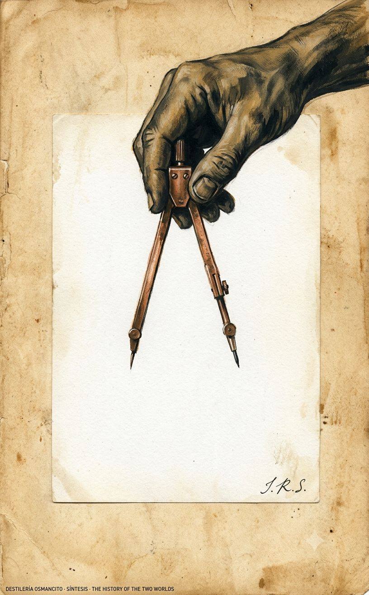
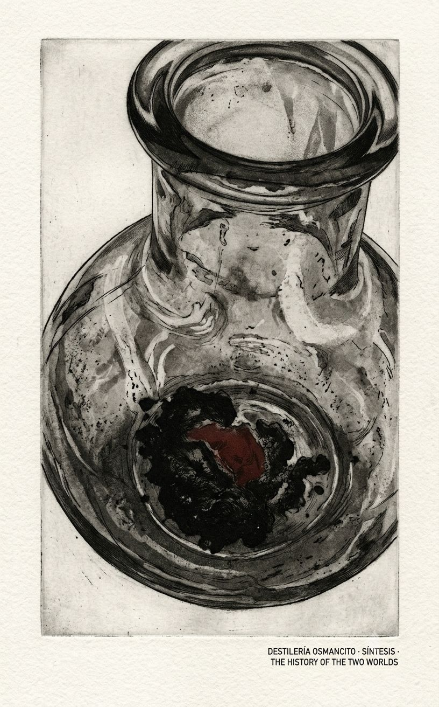
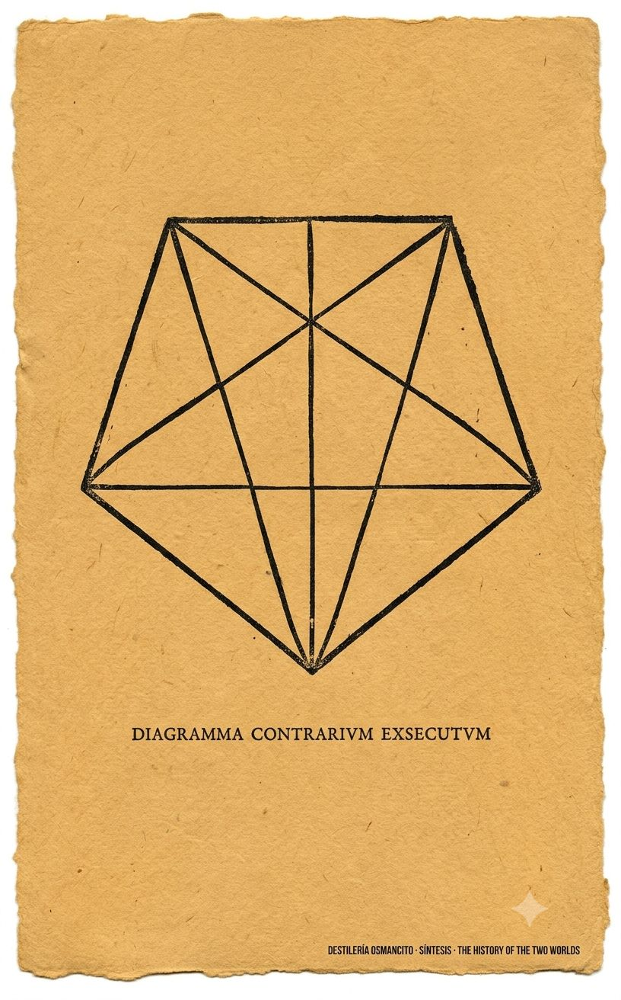
Lo que emerge en el espacio entre todos los análisis no es un tema oculto ni una contradicción no resuelta: es un patrón de ausencia que ningún instrumento buscaba porque ninguno miraba en esa dirección.
Cada análisis encontró algo en los bordes del corpus: Francisco de Lorena en el margen del prefacio, el amigo sin nombre en cuya casa ocurrió el experimento central, el editor invisible cuyos grabados son el argumento, la errata impresa dos veces. Lo leyeron como bordes — como lo que el sistema no procesa, lo que se cuela por las costuras. Pero leídos juntos, esos bordes tienen una forma.
Son todos hombres que hicieron posible el libro y desaparecieron del libro.
El amigo prestó su casa y su materia prima. El editor construyó las imágenes sin las cuales el argumento no existe. Francisco aprendió lo que el libro enseña y murió practicándolo. El padre financió la educación que lo hizo posible. Ninguno de ellos es reconocido como constitutivo. Todos son mencionados en la medida en que sirven y abandonados cuando ya sirvieron.
El corpus que se propuso ser una historia del universo es también, sin saberlo, una historia de cómo se borra a quienes lo hicieron posible. No por malicia —por estructura. El sistema tiene un centro: Fludd, el cosmos, Dios. Todo lo que no es el centro es periferia. Y la periferia, en este sistema, es invisible por definición.
Lo que el palimpsesto revela es esto: debajo de la Historia de los Dos Mundos hay una historia sin título de los hombres que no aparecen en ella. Un amigo. Un grabador. Un padre. Un joven aplastado. Son los que sostuvieron el andamiaje desde abajo mientras el arquitecto miraba hacia arriba.
Fludd los nombra. No los ve.
Esa ceguera no es el defecto del corpus. Es su condición de posibilidad. Un libro que ve a todos habría visto a ninguno con la suficiente precisión para escribir la historia del universo. El costo del sistema es exactamente ese: que para ver el todo desde arriba hay que dejar de ver lo que lo sostiene desde abajo. El corpus lo paga sin saberlo, y sin él tampoco habría libro.
No hay texto debajo del texto. Hay un silencio con la forma exacta de los hombres que faltaron.
El corpus declara que Dios solo puede conocerse a posteriori —a través de sus efectos imperfectos— y termina siendo él mismo un efecto imperfecto que solicita corrección por el mismo método: la errata al final no es un fallo editorial sino el corpus cumpliéndose a sí mismo sin saberlo. — Síntesis
La humildad radical con la que Fludd se declara “el más indigno de todos” no es devoción sino protocolo de acceso: vaciarse del nombre propio es la condición que hace posible escribir el nombre del universo. — Umbral del reconocimiento
El reconocimiento en este corpus no lo gobierna el mérito sino la utilidad estructural: Hermes, el rey, el padre y Francisco de Lorena son reconocidos exactamente en la medida en que sirven al argumento, y abandonados cuando ya sirvieron. — Umbral del reconocimiento
La imagen más viva del corpus —el sol emergiendo del purgatorio— no pertenece a la cosmología sino a una observación de primera persona en casa de un amigo sin nombre: la verdad más alta del sistema se encontró en el lugar más bajo. — Joyería
Francisco de Lorena, el único alumno al que Fludd llama capaz de superarle, murió aplastado por el arte que Fludd le enseñó; el corpus lo entierra en una subordinada y pasa al siguiente nombre sin comentar la ironía. — Narraciones / Joyería
El libro que pretendió unificar todas las artes como lecturas distintas del mismo cosmos es en la práctica una serie de manuales escritos para patronos distintos: la unidad filosófica está declarada; la unidad textual es más débil, y esa debilidad es donde vive la vida del corpus. — Recepción
La geomancia recibe un tratado completo de cuyo autor declara, al cerrarlo, que no confía en sus principios: el reconocimiento del saber y la confianza en ese saber son cosas distintas, y el corpus las sostiene separadas sin resolverlo. — Joyería / Umbral del reconocimiento
Vistos todos los análisis juntos, los elementos que cada instrumento leyó como bordes —el amigo sin nombre, el editor invisible, el padre, Francisco— tienen una forma colectiva: son los hombres que hicieron posible el libro y desaparecieron del libro. La ceguera no es accidental; es la condición que permite que el sistema tenga centro. — Palimpsesto
Para escribir el universo hay que vaciarse del nombre propio, mirar el sol salir del purgatorio en casa de un amigo, y no preguntar qué le ocurrió al joven que aprendió a medir los bastiones.
Hay una manera de conocer las cosas que requiere bajar antes de subir. No como humildad moral —como método. Para llegar al cielo etéreo hay que diseccionar primero una masa negra y fétida. Para demostrar las proporciones del cosmos hay que poblar lugares de memoria con un lobo mirando a los ahorcados. Para escribir la historia del universo hay que declararse el más indigno de todos y proceder sin esperar que nadie lo confirme.
Fludd no eligió ese método. Lo descubrió al practicarlo. El descenso a lo concreto, lo perturbador, lo experimental es la única escalera que llega adonde él quería llegar. La quinta musical no es solo un intervalo: es la proporción del cielo. La disección alquímica no es solo química: es cosmogonía en primera persona. Los bastiones pentagonales no son solo ingeniería: son la geometría de Dios aplicada sobre piedra y tierra. El sistema funciona porque no distingue entre lo alto y lo bajo —los trata como la misma cosa vista desde alturas distintas.
Pero ese sistema tiene un precio que el corpus paga sin nombrarlo. Para ver el todo desde arriba hay que dejar de ver lo que lo sostiene desde abajo. El amigo que prestó la casa y la materia. El grabador que construyó los argumentos en cobre. Francisco, que aprendió el arte de los bastiones y murió bajo uno. El padre que pagó las Musas. Están en el libro como están los andamios en un edificio terminado: retirados antes de que alguien lo fotografíe, presentes en la forma de lo que sostuvieron.
Y al final, cuando el libro que describió las proporciones perfectas del universo lista las figuras que salieron invertidas, no hay ironía ni fracaso: hay exactitud. Un sistema que afirma conocer el cosmos solo a través de sus efectos imperfectos no podía terminar de otra manera que siendo él mismo un efecto imperfecto. La errata impresa dos veces no contradice el método —lo confirma.
Lo que queda, cuando todo se comprime, no es la cosmología ni el hermetismo ni la enciclopedia de artes: es el gesto de un hombre que se vació del nombre propio para poder llenar mil páginas, que bajó al fondo de una vasija de vidrio para encontrar el sol, que enseñó a medir el mundo a alguien que el mundo mataría, y que terminó pidiendo al lector benévolo que corrigiera lo que quedó al revés.
El cosmos estaba en los bordes. Siempre estuvo en los bordes.
El análisis completo produjo un corpus que vive en sus bordes: el sol saliendo del purgatorio en casa de un amigo sin nombre, el lobo mirando los ahorcados como método pedagógico, la errata del universo impresa dos veces. Las imágenes que merece este corpus no ilustran la cosmología —encarnan la distancia entre lo que el sistema declara y lo que practica. Entre el cosmos perfecto y las figuras invertidas.
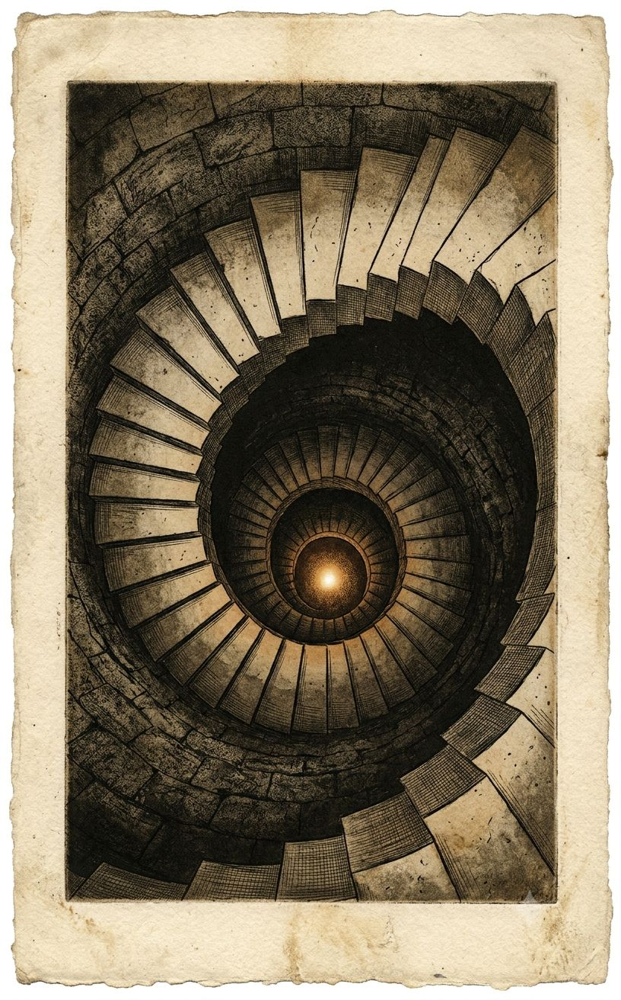
Origen: El hallazgo central del destilado: para llegar al cielo etéreo hay que bajar primero. La escalera de Fludd va hacia abajo antes de ir hacia arriba. Ningún instrumento lo nombró así hasta que el destilado los comprimió juntos.
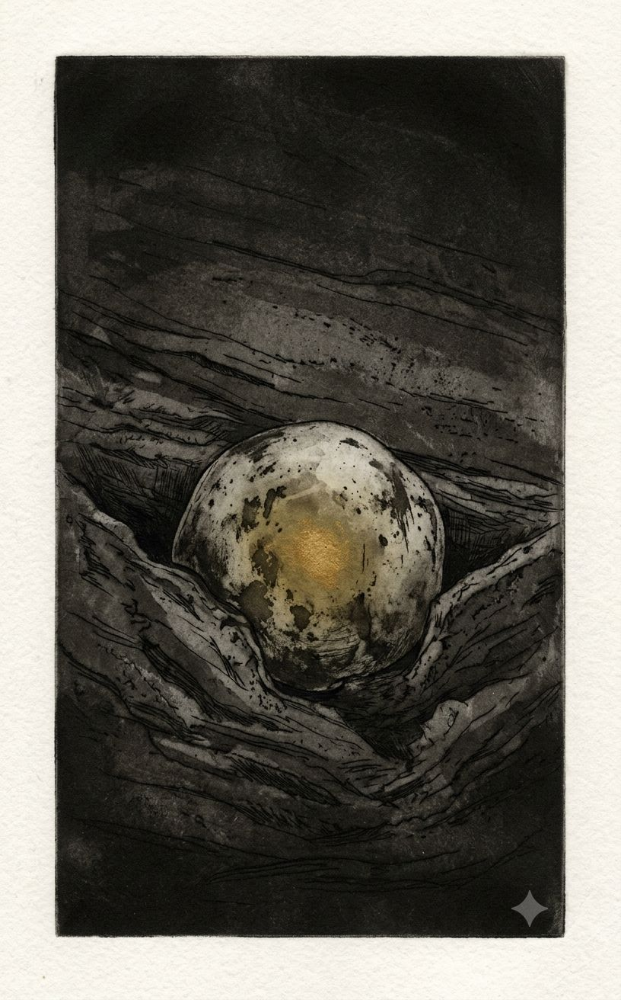
Origen: La imagen más viva del corpus, producida por Joyería: el sol emergiendo de la masa primordial “miserablemente, como desde el purgatorio, o como resucitando de entre los muertos.” La cosmogonía como resurrección sucia.
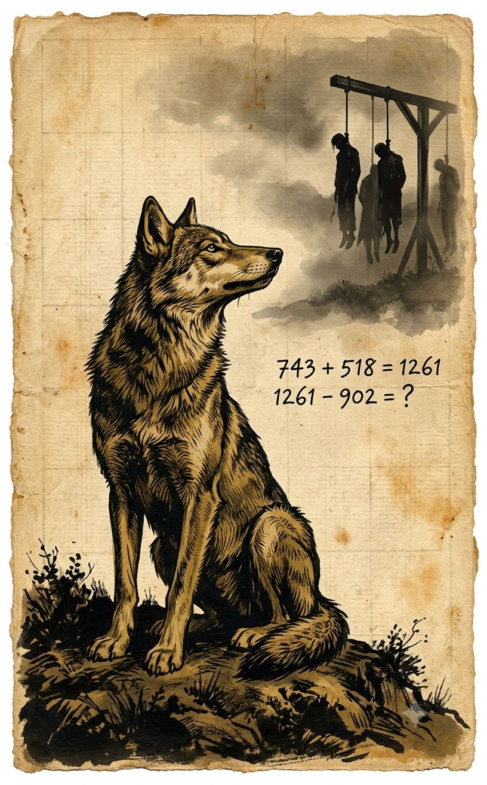
Origen: El hallazgo de Joyería sobre la aritmética mnemónica: el mejor método para no olvidar un número requiere habitar mentalmente una escena de ejecución. Un lobo mirando a los ahorcados como técnica pedagógica del siglo XVII.
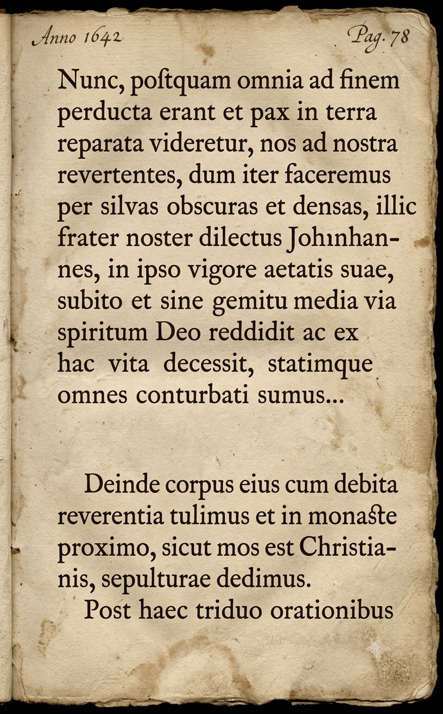
Origen: El hallazgo de Narraciones: Francisco de Lorena, el alumno más capaz, muerto por el arte que aprendió, enterrado en una subordinada. La mayor brecha entre mérito y reconocimiento del corpus.
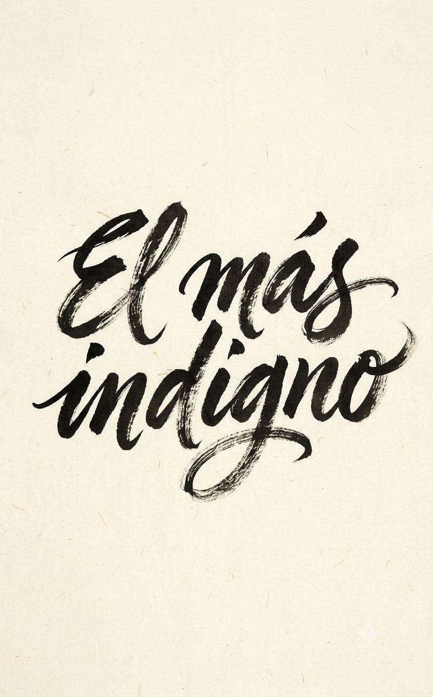
Origen: El hallazgo del Umbral del reconocimiento: declararse el más indigno de todos es la llave de acceso, no la humildad. El vaciamiento del nombre propio como protocolo de entrada al cosmos.
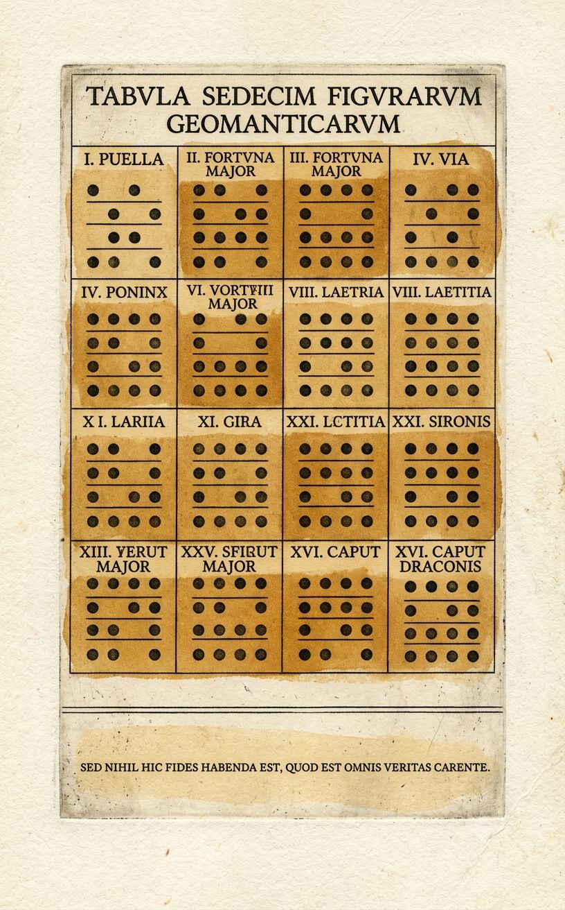
Origen: El hallazgo de Joyería y Umbral del reconocimiento: la geomancia recibe un tratado completo cuyo autor declara al final que no confía en sus principios. Reconocimiento otorgado y fe retirada en el mismo movimiento.
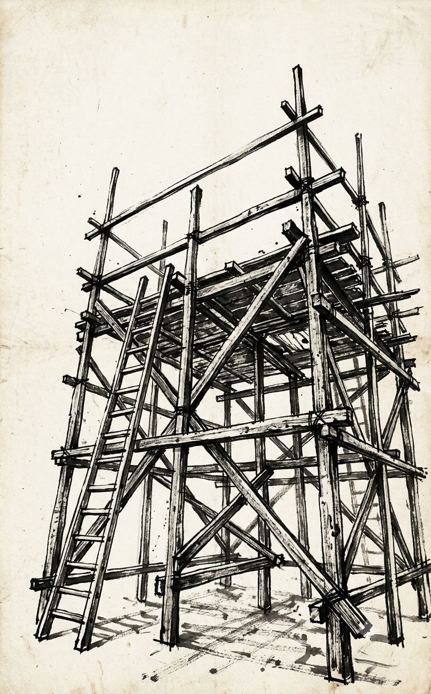
Origen: El hallazgo del Palimpsesto: el amigo sin nombre, el editor invisible, el padre, Francisco —los hombres que hicieron posible el libro y desaparecieron del libro. Un silencio con la forma exacta de los que faltaron.
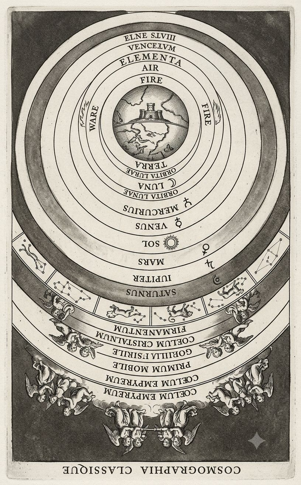
Origen: El hallazgo de Síntesis: la errata no es un fallo editorial sino el corpus cumpliéndose a sí mismo. Un sistema que solo puede conocer lo perfecto a través de sus efectos imperfectos termina siendo él mismo un efecto imperfecto.